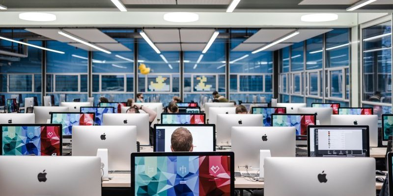
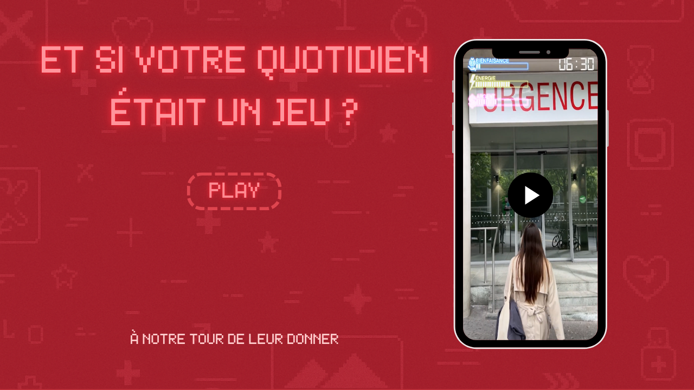

Mon expertise
Communication et création de contenus
Stratégie
Rédaction
RP
Veille
Digitale

Montage

Vidéo
Photo
Newsletter
Design
Mon portfolio
Projets académiques et professionnels

NIFFF X UNINE
Projet réalisé dans le cadre d'un cours à l'UniNE en collaboration avec le NIFFF.

Projets 42 Lausanne
Trois projets que j'ai réalisé dans le cadre de mon stage à 42 Lausanne.

Portrait vidéo : Ancolie Tattoo
Vidéo pour un cours à l'UniNE, présentant le métier de tattoo artist.

Campagne infirmières et infirmiers précaires
Projet de groupe fictif réalisé à l'UniNE.
Envie d'en savoir plus ?
Contactez-moi sans attendre.